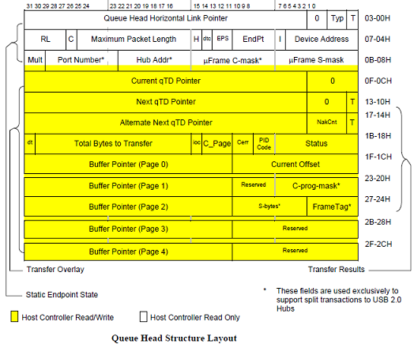
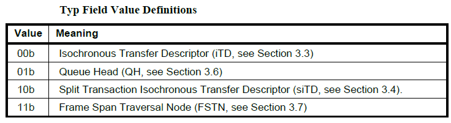
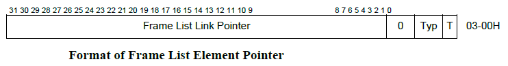
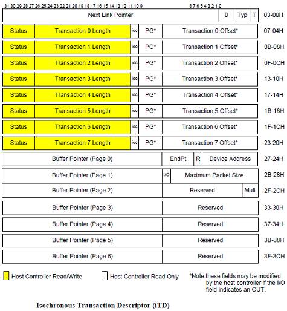

EHCI 内部结构
EHCI 的核心就是把数据传输分成了两类来进行调度：
-
Asynchronous Schedule。用来传输对时间延迟要求不高的 Endpoint 数据，包括Control Transfer和Bulk Transfer。 -
Periodic Schedule。用来传输对时间延迟要求高的 Endpoint 数据，包括Isochronous Transfer和Interrupt Transfer。
Asynchronous Queue Schedule
Asynchronous Schedule 内部实现非常的简单就只有一级链表，链表中只有 Queue
Head 类型的描述符。每个时间片内传输完 Period 数据以后，再尽可能的传输 Asynchronous 数据即可。
核心的描述符如下：
Queue Head
Queue Element Transfer Descriptor (qTD)

Periodic Queue Schedule
Periodic Schedule 内部实现如上图所示，核心是两级链表：
第一级链表如上图
绿色所示。是各种传输结构的实际描述符，主要包含以下几种类型的描述符：第二级链表如上图
橙色所示。是一个指针数组，数组中保存的是指向第一级链表的指针。这里每个数组成员代表一个时间分片 Frame/Micro-Frame 的起始位置，每个时间片会根据指针传输第一级链表中的数据，直到第一级链表的结尾。指针的格式如下：这里的调度思想就是：第一级链表是一个传输数据全集，第二级链表决定了某个时间片里要传输的数据。
这样合理的安排二级链表的指针，比如间隔 8 次指向同一位置这部分数据的 interval 就是 8，间隔 4 次指向同一位置这部分数据的 interval 就是 4。 第一级链表也是要根据 interval 排序的。
Periodic Schedule核心的描述符除了 QH、QTD 还有 ITD：Isochronous (High-Speed) Transfer Descriptor (iTD)
